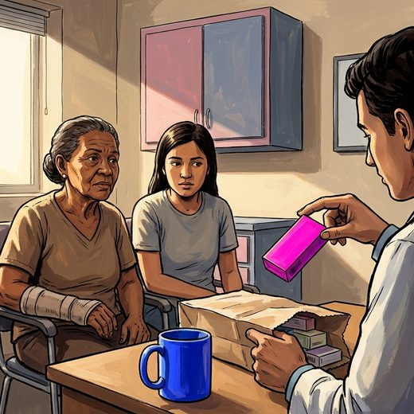

Ferramenta desta aula
Quedas — estratificação de risco. Roda no navegador, sem cadastro.
Consulta rápida à beira do leito
Condutas, doses e interações.
Referências da aula · 10
- Rodrigues RAP, Fernandes DS, Silva MPAE, et al. Predictive capacity of the Integrated Care for Older People screening tool to assess fall risk in older adults in geriatric care. J Clin Nurs. 2026;35(2):804-812. doi:10.1111/jocn.70063.DOI
- Montero-Odasso M, van der Velde N, Martin FC, Petrovic M, Tan MP, Ryg J, et al. World guidelines for falls prevention and management for older adults: a global initiative. Age Ageing. 2022;51(9):afac205. PMID 36178003. doi:10.1093/ageing/afac205.PubMedDOI
- Sherrington C, Fairhall NJ, Wallbank GK, Tiedemann A, Michaleff ZA, Howard K, et al. Exercise for preventing falls in older people living in the community. Cochrane Database Syst Rev. 2019;(1):CD012424. PMID 30703272. doi:10.1002/14651858.CD012424.pub2.PubMedDOI
- Woolcott JC, Richardson KJ, Wiens MO, Patel B, Marin J, Khan KM, et al. Meta-analysis of the impact of 9 medication classes on falls in elderly persons. Arch Intern Med. 2009;169(21):1952-60. PMID 19933955. doi:10.1001/archinternmed.2009.357.PubMedDOI
- 2023 American Geriatrics Society Beers Criteria® Update Expert Panel. American Geriatrics Society 2023 updated AGS Beers Criteria® for potentially inappropriate medication use in older adults. J Am Geriatr Soc. 2023;71(7):2052-81. PMID 37139824. doi:10.1111/jgs.18372.PubMedDOI
- O'Mahony D, Cherubini A, Guiteras AR, Denkinger M, Beuscart JB, Onder G, et al. STOPP/START criteria for potentially inappropriate prescribing in older people: version 3. Eur Geriatr Med. 2023;14(4):625-32. PMID 37256475. doi:10.1007/s41999-023-00777-y.PubMedDOI
- Clemson L, Stark S, Pighills AC, Fairhall NJ, Lamb SE, Ali J, et al. Environmental interventions for preventing falls in older people living in the community. Cochrane Database Syst Rev. 2023;(3):CD013258. PMID 36893804. doi:10.1002/14651858.CD013258.pub2.PubMedDOI
- Santesso N, Carrasco-Labra A, Brignardello-Petersen R. Hip protectors for preventing hip fractures in older people. Cochrane Database Syst Rev. 2014;(3):CD001255. PMID 24687239. doi:10.1002/14651858.CD001255.pub5.PubMedDOI
- US Preventive Services Task Force. Interventions to prevent falls in community-dwelling older adults: US Preventive Services Task Force recommendation statement. JAMA. 2018;319(16):1696-704. PMID 29710141. doi:10.1001/jama.2018.3097.PubMedDOI
- Haran MJ, Cameron ID, Ivers RQ, Simpson JM, Lee BB, Tanzer M, et al. Effect on falls of providing single lens distance vision glasses to multifocal glasses wearers: VISIBLE randomised controlled trial. BMJ. 2010;340:c2265. PMID 20501583. doi:10.1136/bmj.c2265.PubMedDOI